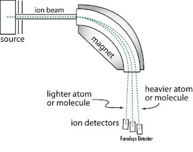
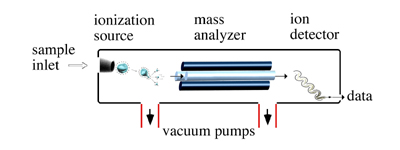
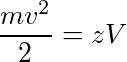
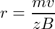
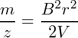

Determination of Molar Mass of Simple Compounds Using Mass Spectroscopy
To understand the principle behind mass spectrometry, first we need to look at the five important components of mass spectrometer.
The mass spectrometer consist of five important components:
a. Sample inlet: Here the sample under study is introduced into the chamber and the pressure inside the sample inlet is much lower than the outside pressure. A stream of molecules is produced here.
b. Ion Source: The stream of molecules undergo ionisation by various methods. Different compounds are ionised by different methods. This includes: Electron Ionisation(EI), Chemical Ionisation (CI), Secondary ion mass spectrometry (SIMS), Fast Atom Bombardment (FAB) and Matrix Desorption Ionisation (MALDI)
c. Mass Analyser: Saparates the compound based on their mass to charge ratio (m/z).
d. Detector: The ions that are deflected under the magnetic field are detected by the detector.
e. Output: The siganl is then recorded and processed by the data system. The output is the mass spectrum.
1. Sample introduction:
Sample analysed by mass spectrometry can be a gas, liquid or a solid. The sample introduced into the sample inlet must first be evapourised, so that the stream of molecules can reach the ionisation chamber. For a gas a simple sample inlet is used from where the molecules of vapour can drawn to the ionisation chamber which is maintained at a lower pressure than the sample inlet. For a non volatile sanples mostly direct probe method is used. The sample is placed on a thind wire loop or pin on the tip of the probe which is introduced to the the ionisation chamber through vacuum lock. The sample probe is placed close to the ion source. When the probe is heated, the vapour form the samples are in close proximity to the ionizing beam.
The most versatile of all sample inlet systems is the one where a chromotograph is connected to the mass spectrometer. This way the mixture of samples are first separated by the chromatograph and the mass spectrum of each component thus separated can be dertermined individually.
2. Ionsiation methods and the source of ionisation:
There are many different ionisation methods for different applications base on the method of ionisation.
Ionisation source Ionisation method Electrospray Ionisation (ESI) Evapouration of charged droplets Nano Electrospray Ionisation (nanoESI) Evapouration of charged droplets Chemical Ionisation (CI) Proton transfer Atmospheric Pressure Chemical Ionisation (APCI) Corona discharge and proton transfer Matrix Assisted Laser Desorption/Ionisation (MALDI) Proton absorption/ proton transfer Desorption/Ionisation On Silicon (DIOS) Proton absorption/ proton transfer Fast Atom/Ion Bombardment (FAB) Ion desorption/ proton transfer Electron Ionisation (EI) Electron beam/ electron transfer
3. Electron Ionisation method:
In all the mass spectrometers regardsless of the method used to determine the mass-to-charge ratio of a molecule/compound, first the sample has to enter the mass spectrometer, then converted to charge particle by ion source before there are deflected by the magnetic field and detected. In EI-MS a beam of high energy electrons stike the incoming molecules. The electron and the molecules collide and the molecules form cationss. A repleeer plate that carries a positive electrical potential directs the newly created ions towards a series of accelaration plates. A large potetial difference (1 to 10 KV) is applied across these plates to produce a beam of positive ions. There is a repeller plate that absorbs any negative ions. Molecules that are not ionised are drwan off by the vacuum. Most of the molecules or atoms require 8 to 15 electron colts to get ionised. But usually the beam of electrons stike the molecules at 50 to 70 eV. For recording a simple proton NMR spectra deuterated solvents especially for the use of NMR are used.
Salient features of EI method:
- Basic and well understood ionisation method
- Ideal for all volatile compounds with masses less than 1000.
- Leads to molecular ion fragmentation, fragmentation provides structural information.
- Mass spectra are reproducible.
4. Mass Analyzer:
Mass analyzer is the part of the mass spectrometer where the ionsied ions and after being accelerated by the electric field are separated based on their mass to charge ratios. Similar to ionisation technique there are different types of mass analyzers available.

The Magnetic Sector Mass AnalyzerGreater mass to charge ratio have larger radius of the curved path Double _Focusing Mass AnalyzerSimilar to Magnetic sector buy higher resolution (10 or more folds) Quadrupole Mass Analyzer Ions with the correct mass-to-charge ratio under go stable oscillation and passes through the cylinderal rods (DC voltage and RF is appleid to the rods) before they hit the detector Time of Flight Mass Analyze (TOF)Velocities of two ions created at the same time and with same kinetic energy varies with the mass of the ions. Lighter ions have higher velocity

Figure 2 : Schematics of mass spectrometer with quadrupole mass analyze.
Picture source
The magnetic sector mass analysis:
The kinetic energy of an accelarated ion imparted by the voltage V is:

where m is the mass of the ion, v is its velocity and z is the charge. When the ions pass through the two poles of a magent, the charged particles take a curve path. The radius of curvature (r) of this path is:

where B is the magnetic field strength.
Combining the above two equations:

Greater the value of m/z value larger is the radius of the curved path. The analyser tube has a fixed radius of curvature and the magnetic field strength is varied such that all the ions reach the detector.
Picture source
5. Detector:
After passing through the mass analyzer the ions strike the detector. Detector in a mass spectrometer is the counter which produces current proportional to the number of ions that strike it. In mass analyzer which sweeps through a range of 35 to 300 m/z, an ion of a given mass-to-charge strikes the detector one time out of 300. The mass spectrum amplifys even tiny current in to electrical signal. Each peak represent a small electrical signal.
6. Output:
The output in mass spectrometry is the mass spectra which is stick diagram showing relative current produced by ions with respect to varying mass-to-charge ratio. The vertical axix is the relative abundance or relative intensity and the x axis is the mass-to-charge. Greater the current larger is the abundance of the ion.
Fragmentation patterns for organic compounds:
In EIMS, spectrometry, the molecule is bombarded by high energy electrons and this results in the sample molecule losing an electron to form a radical cation. If the lifetime of this molecular ion is greater than 10-5 sec, a peak corresponding to it mass appears in the mass spectrum. And incase the life time is less than 10-5 sec, the molecular ion breaks apart into fragments before they are accelerated within the ionisation chamber and enter the mass analyzer. Peaks corresponding to the mass-to-charge of the fragments appear in the mass spectrum.. Not all the molecular ions formed by ionisation have same lifetime and so a typical EI mass spectrum have peaks corresponding to both the molecular ion and the fragment ions.